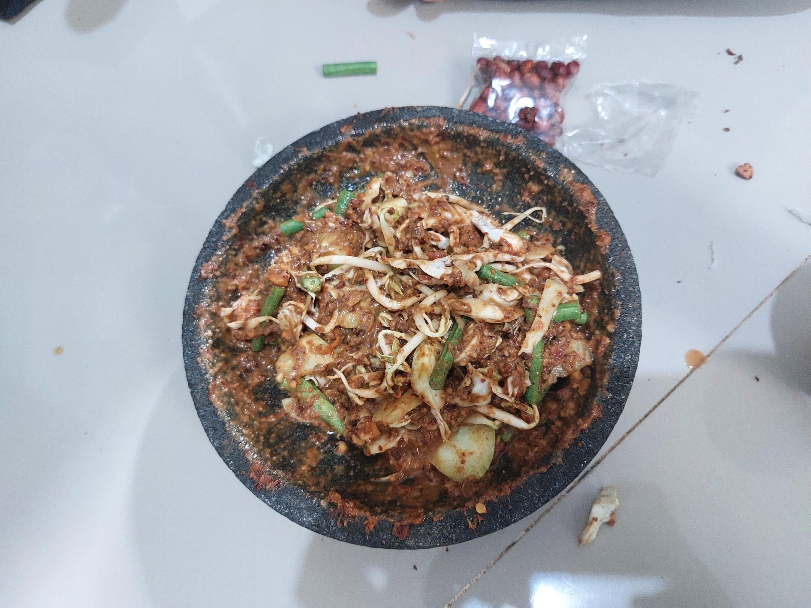
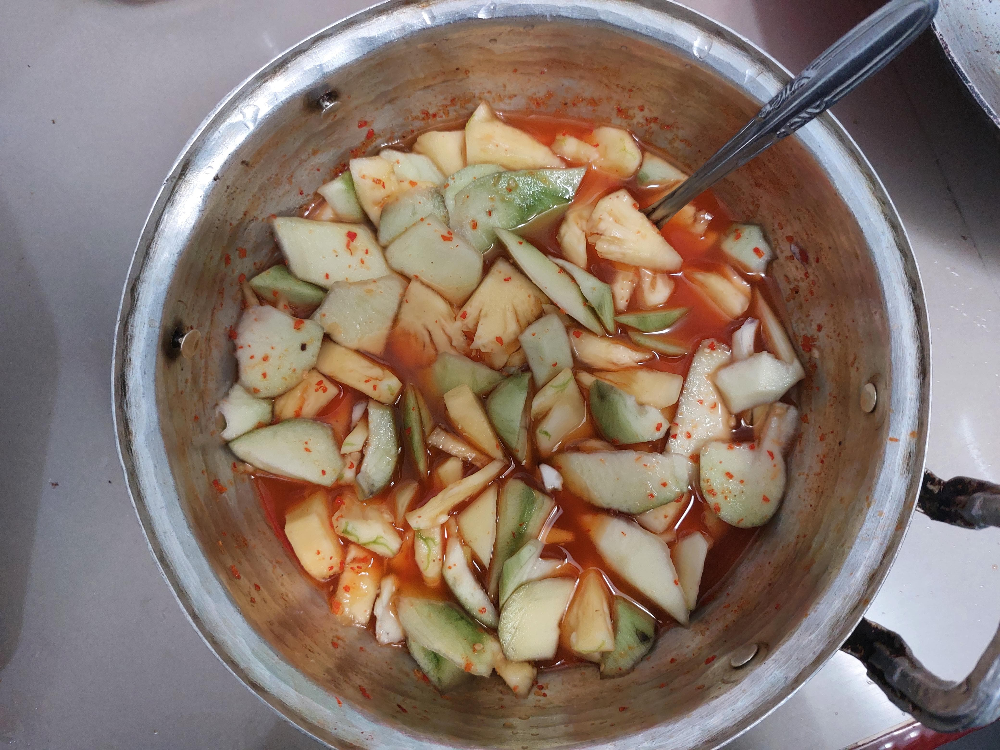

KAREDOK
Sejarah Karedok
Desa Karedok terletak di wilayah utara Kecamatan Jatigede, Kabupaten Sumedang. Dahulu, daerah ini merupakan bagian dari Kerajaan Sumedang Larang. Awalnya, kampung ini dihuni oleh dua keluarga yang berasal dari kampung di seberang Sungai Cimanuk yang terkena longsor. Berkat tanahnya yang subur, desa ini berkembang pesat hingga berpenduduk lebih dari 700 jiwa.
Nama “Karedok” berasal dari kejadian ketika Pangeran Aria Suria Atmaja, Bupati Sumedang saat itu, beristirahat di Rancakeong setelah menangkap ikan di Sungai Cimanuk (Leuwi Kiara). Ia disuguhi hidangan karedok terong oleh warga, yang kemudian juga dikenalkan kepada para sesepuh Sumedang. Karena kelezatan hidangan tersebut, kampung ini kemudian dinamai Desa Karedok.
Secara administratif, Desa Karedok sebelumnya berada di wilayah Kecamatan Tomo, namun sejak 24 Februari 2001 berdasarkan SK Bupati Sumedang No. 61 Tahun 2001, desa ini menjadi bagian dari Kecamatan Jatigede. Desa ini terdiri dari dua dusun (Karedok 1 dan 2), enam RW, dan dua puluh empat RT. Bentuk wilayahnya berupa dataran, dan dipimpin oleh seorang kepala desa atau kuwu.
Cara Pembuatan Karedok
Bahan Sayuran:
- 100 gram kol, iris halus
- 5 batang kacang panjang, iris tipis
- 1 buah mentimun, potong korek api
- 50 gram tauge, buang ekornya
- 1 buah terong lalap kecil (opsional), iris tipis
- 1 genggam daun kemangi (opsional)
Bahan Bumbu Kacang:
- 100 gram kacang tanah, digoreng
- 2 siung bawang putih
- 3 buah cabai rawit merah (sesuaikan selera)
- 1 ruas kencur (sekitar 2 cm)
- 1 sdm gula merah, serut
- 1 sdm air asam jawa
- ½ sdt garam
- 100 ml air matang (atau secukupnya untuk kekentalan yang diinginkan)
Cara Membuat:
- Haluskan bumbu: Ulek atau blender kacang tanah bersama bawang putih, cabai, kencur, gula merah, garam, dan air asam jawa hingga halus dan tercampur rata. Tambahkan air sedikit demi sedikit sampai mencapai kekentalan yang diinginkan.
- Campurkan dengan sayuran: Masukkan semua sayuran ke dalam mangkuk besar. Siram atau aduk rata dengan bumbu kacang.
- Sajikan: Sajikan segera agar sayuran tetap segar dan renyah. Bisa ditambahkan kerupuk dan nasi hangat jika suka.
ASINAN
Sejarah Asinan
Asinan adalah makanan khas Indonesia yang terdiri dari sayuran atau buah-buahan segar yang diawetkan dalam larutan air garam dan cuka. Makanan ini sangat populer di Bogor dan sering dijadikan sebagai camilan segar.
Asinan Bogor memiliki cita rasa yang unik, yaitu perpaduan antara rasa asam, manis, pedas, dan gurih. Biasanya disajikan dengan bumbu kacang atau saus khas yang membuatnya semakin lezat.
Cara Pembuatan Asinan Bogor
Bahan Sayuran:
- 1 buah kol, iris halus
- 2 buah timun, potong dadu
- 100 gram tauge
- 1 buah nanas, potong kecil
Bahan Bumbu:
- 5 cabai rawit
- 3 siung bawang putih
- 1 sdm gula merah
- 1 sdt garam
- 100 ml air matang
- 2 sdm cuka
Cara Membuat:
- Rendam sayuran: Campur sayuran dengan larutan air garam dan cuka selama 1 jam.
- Haluskan bumbu: Ulek cabai, bawang putih, gula merah, dan garam.
- Campurkan: Tambahkan air dan aduk rata. Siram ke sayuran yang sudah direndam.
- Sajikan: Asinan siap dinikmati.
ES OYEN

SEJARAH ES OYEN
Es Oyen adalah minuman khas dari Bandung, Jawa Barat. Minuman ini dikenal sejak tahun 1950-an dan pertama kali dijual oleh seseorang bernama "Oyen", yang kemudian menjadi nama dagang minuman ini. Es oyen terkenal karena isinya yang beragam seperti buah-buahan, kelapa muda, kolang-kaling, dan disajikan dengan es serut serta sirup manis.
Cara Pembuatan Es Oyen
Langkah-langkah umum dalam membuat es oyen:
- Menyiapkan bahan: alpukat, kelapa muda, kolang-kaling, nangka, cincau, tape singkong.
- Membuat sirup dari gula, air, dan daun pandan.
- Memasukkan potongan bahan ke dalam mangkuk atau gelas.
- Menambahkan es serut di atasnya.
- Menyiramkan sirup dan susu kental manis (jika suka).
- Menyajikan dalam keadaan dingin.
Cara Membuat Es Oyen Sendiri di Rumah
Bahan-bahan:
- 1 buah alpukat matang, dipotong kecil
- 100 gram kelapa muda, dikeruk
- 100 gram kolang-kaling, direbus
- 100 gram nangka, diiris tipis
- 100 gram cincau hitam, dipotong dadu
- 100 gram tape singkong
- Es serut secukupnya
- Sirup merah atau gula merah cair
- Susu kental manis (opsional)
Langkah-langkah:
- Masukkan semua bahan ke dalam gelas atau mangkuk saji.
- Tambahkan es serut di atasnya.
- Tuangkan sirup dan susu kental manis jika suka.
- Aduk rata dan sajikan dingin.